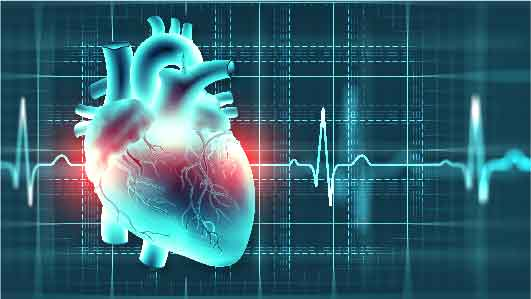

Touching lives, one patient at a time.
Providing all our best. Because Your Life Matters. Fast, friendly and accurate care for you
24/7 Emergency Hotline
+91 9911 2336 11 |
Touching lives, one patient at a time. Providing all our best. Because Your Life Matters. Fast, friendly and accurate care for you |
24/7 Emergency Hotline +91 9911 2336 11 |
 |
|
It takes passion and commitment to deal with matters of the heart. The seasoned cardiologists at Kamineni Hospitals are here to take care of you, handling all cardiac complications and emergencies with a singular purpose to keep you and your heart healthier. Cardiac Sciences mainly consist of Cardiology and Cardiothoracic & Vascular Surgery. Our seasoned cardiology experts at Kamineni Hospitals offer comprehensive treatment for patients suffering from routine to complex cardiac diseases or disorders.
It is a medical speciality that deals with the diagnosis and treatment of heart disorders. Along with that, it deals with cardiovascular diseases. Ignoring early signs of cardiovascular diseases will lead to heart attack, stroke, heart failure, and more. A specialist who is an expert in dealing with the diseases of the heart and blood vessels is known as a Cardiologist. Cardiac Science mainly consists of three-section Cardiology, Cardiothoracic, and Vascular Surgery.
Our comprehensive cardiac care consists of procedures such as Interventional Cardiology, Cardiothoracic, and Cardiovascular Surgery, Minimally Invasive Cardiac Surgery, Open Heart Surgery, and Angioplasty. As one of the best heart hospitals in Hyderabad, we offer effective treatment for common to complex heart disorders.
Based on the type of heart disease you may experience heart disease symptoms. Some of the common heart diseases are coronary artery diseases, heart valve diseases, and more.
Also, the symptoms may change based on your gender. For example, blood vessel diseases may cause chest pain more commonly in men than in women. Whereas women develop other signs and symptoms and chest pain like breathing difficulties, nausea, and extreme fatigue.
|
INFINITE HOSPITALS |